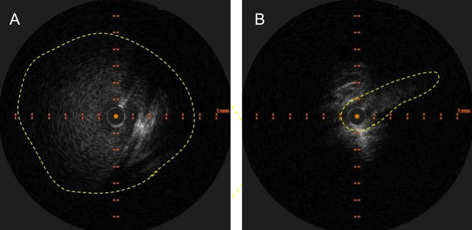
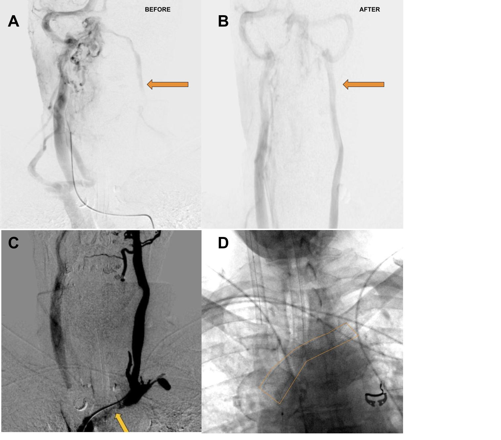
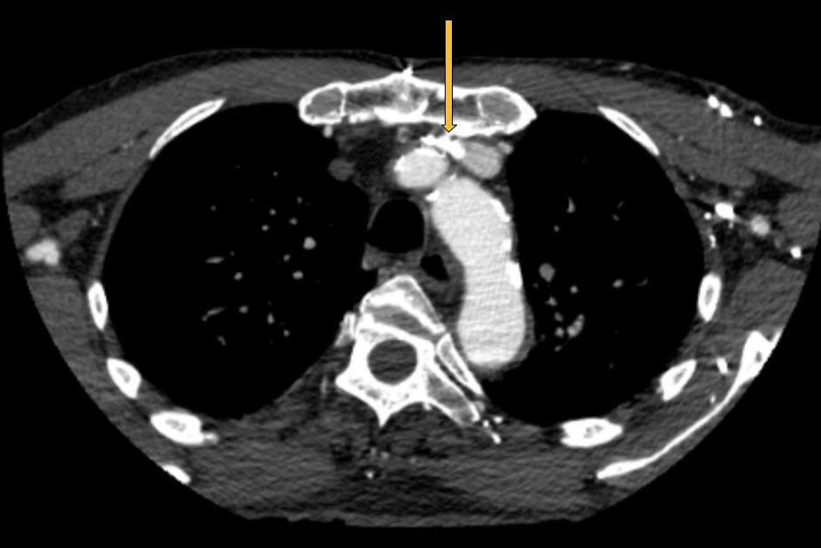

Syndrome Sinistre: Left Brachiocephalic Vein Compression and its Neurological Manifestations.
Authors: Karthikeyan M. Arcot1,2, Vincent DeOrchis1
Affiliations:
- St. Francis Hospital & Heart Center
- New York University Langone Health
Background:
Embryologically, the left brachiocephalic vein (LBV) originates as an anastomotic channel between the right and left anterior cardinal veins 1. This positions the LBV between the manubrium sterni anteriorly and the innominate artery posteriorly 2. This pattern of adjacency of the aorta to the LBV is unique to mammals and results from a quirk of evolution 3. With age, the ascending aorta unfolds, elongates and dilates 4. Simultaneously, there is a change in the thoracic geometry that reduces the thoracic volume primarily from disc height loss and kyphosis 5. These transitions progressively compress the LBV. Normally this compression is circumvented via collateral pathways and "Blood finds a way" 6. However, traversing these circuitous pathways comes at a cost and can result in delayed transit times and venous congestion. The brain could potentially accommodate this congestion, in which case LBV compression will end up being a curious but benign phenomenon. On the other hand, the brain might not tolerate this congestion. LBV compression may then open up a new avenue to explore and treat neurological and neurodegenerative conditions that originate from venous congestion.
Embryology, Anatomy, Radiology and Clinical Features:
The anterior cardinal veins drain the cephalic portion of the embryo. During week eight of development the thyroid and thymic veins join to form a large transverse anastomosis superior to the common cardinal veins. This anastomosis allows blood from the cephalic portion of left anterior cardinal vein (future left internal jugular vein) to reach the junction of the right anterior cardinal vein (future right internal jugular vein) and right common cardinal vein (future superior vena cava (SVC)). Various developmental venous malformations (left sided SVC, double SVC) may occur if the above does not proceed according to plan 7. Normally however, one ends up with an efficient LBV that transports blood from the left internal jugular vein to the superior vena cava. Until, of course, it is smothered by its sturdier neighbours.
The LBV vein is approximately 6 cm to 7 cm long. It is formed by the confluence of the left internal jugular vein and the left subclavian vein behind the left sternoclavicular joint. It then runs an oblique and downward course to the right to join the right brachiocephalic vein and form the superior vena cava behind the sternum and the first intercostal space. In its course, it receives the following veins: left vertebral, left inferior thyroid, left internal thoracic, left superior intercostal, left supreme intercostal, thymic and pericardiacophrenic veins. Its relationship with its less compliant neighbours forms the crux of this syndrome. It initially runs anterior to the parietal pleura of the lung and then enters a valley between the bony manubrium anteriorly and an unyielding innominate artery posteriorly 2. It is in this valley that the LBV gets trapped usually for a few millimeters congruent with the portion in contact with the innominate artery.
The radiological findings are often obvious but the apparent lack of clinical relevance lends to underreporting. As an example, osteoporotic vertebral fractures suffer a similar fate 8. There are excellent examples of LBV compression with resultant venous reflux on CT angiography 9, 10. Similar findings are noted on MR Venography 11. However, this condition will continue to elude detection by CT angiography, if right sided injections are performed 10 and MR venography of the neck if coverage does not extend down to the level of the LBV.
Intravascular ultrasound (IVUS) should be the new "gold standard" for diagnosis as it clearly identifies and demonstrates the dramatic decrease in luminal area while providing accurate vessel measurements that are necessary for treatment.

Figure 1: A. Appearance of LBV on intravascular ultrasound with manual demarcation of approximate border with dashed yellow lines B. Severe slit like compression of LBV
Clinically, there appears to be a predilection for headaches, vertigo, tinnitus, deafness and imbalance. Some patients report a disabling "brain fog" in addition. Conventional catheter-based angiography is useful in depicting the delay in venous emptying or stagnation or slowing of flow in the left internal jugular vein. It is also useful in depicting a radiological improvement in flow after treatment. Conventional catheter-based venography is a poor modality to detect this condition, as the plane of compression is usually parallel to the antero-posterior plane and the lateral plane is obscured by the patient's arms. Venous stagnation, reflux and diverticula are often noted.

Figure 2: A. Delayed phase of arterial angiogram showing poor flow in the left internal jugular vein (orange arrow) with B. normalization after stenting of the left brachiocephalic vein C. Left Internal Jugular Vein injection with retrograde flow into the cranium, continuing across the torcula and emptying via the right internal jugular vein due to LBV compression (orange arrow) D. Left Brachiocephalic Stent Outlined with orange line
As an interesting aside, there occurs an intersection between pacemakers / defibrillators and LBV compression. The leads are typically inserted on the side of the non-dominant hand 12. They can occupy some valuable space in the LBV and produce the above symptoms.

Figure 3: Pacemaker leads compounding the venous outflow obstruction in the setting of LBV compression.
Discussion:
LBV compression should be expected to occur and progress with aging due to the anatomical factors described above. It should generally be asymptomatic given the remarkable redundancy of the venous system and its collaterals. Symptoms should and do ensue when the venous collaterals are either insufficient or overwhelmed. This can be compounded by venous obstruction on the contralateral side, which is not uncommon. For example, trapping of the right internal jugular vein at the level of the C1 transverse process which is commonly noted in a similar age group. In fact, bilateral outflow obstruction might be necessary, given the robust nature of the connections between the dural sinuses. This results in the emergence of two pathophysiological states. One governed by a buildup of pressure due to venous hypertension and the other governed by stagnation / venous congestion. The venous hypertensive state could potentially explain the physical effects such as headache and obstruction of cerebrospinal fluid outflow and the resultant clinical conditions. Accumulation of toxic waste metabolites 13 due to poor venous outflow could potentially explain the chemical and biological effects that lead to neurological dysfunction or potentially neurodegeneration. Aging is a risk factor for neurodegenerative disease 14 and aging is a risk factor for LBV compression. This raises the prospect of LBV compression as an important precursor of neurodegenerative diseases.
There have been multiple attempts to link singular neurological disorders to venous outflow obstruction. The obverse, multiple neurological manifestations from a single site of obstruction, appears more likely. For example, chronic cerebrospinal venous insufficiency tied itself to multiple sclerosis 15. It was heralded by a flurry of research which quickly dwindled when the initial results were not widely reproducible 16. This contributed to a general sense of dubiousness regarding the venous origins of neurological disorders. As another example, transverse sinus stenosis as a cause of intracranial hypertension, is a more recent association that is battling this perception. It appears in need of definitive evidence to become widely accepted 17. The list continues on with conditions such as transient global amnesia 11, deafness 18, Normal Pressure Hydrocephalus 19 and so on.
One could argue that a more holistic approach is in order. If such an approach was applied, the entire class of disorders, neurological or otherwise would come under an umbrella term such as Venous Outflow Obstruction Disorders (Voodoo). The venous hierarchy (for the superior vena caval system) would be along anatomical lines beginning with the cortical veins, coursing through the superior sagittal, inferior sagittal and straight sinuses, moving on to the transverse and sigmoid sinuses, followed by the paired jugular and brachiocephalic veins with the superior vena cava and the right heart, pulmonary arteries and left heart forming the inferior portions. Theoretically, any downstream segment in this hierarchy should be able to affect any upstream segment and produce a disorder based on the affected territory. For example, one should not be surprised when superior vena caval stenosis produces papilledema in a patient and similarly not be surprised if transverse sinus stenting does not relieve the papilledema in said patient. Hence, it would be important to evaluate the entire pathway. The treatment should address tandem and bilateral obstructions with the aim of restoring good venous outflow, from both the superficial and deep pathways.
LBV compression would fall into this class of disorders. The symptoms would depend on the affected upstream pathway and the area of the central nervous system that it drains. On the surface, this condition appears to be associated with seemingly innocuous complaints such as headache and vertigo. At a deeper level, it may precede more sinister neurodegenerative disorders. Given the simplicity of its treatment with stenting, it represents a serious target for further research along with other venous outflow obstruction disorders.